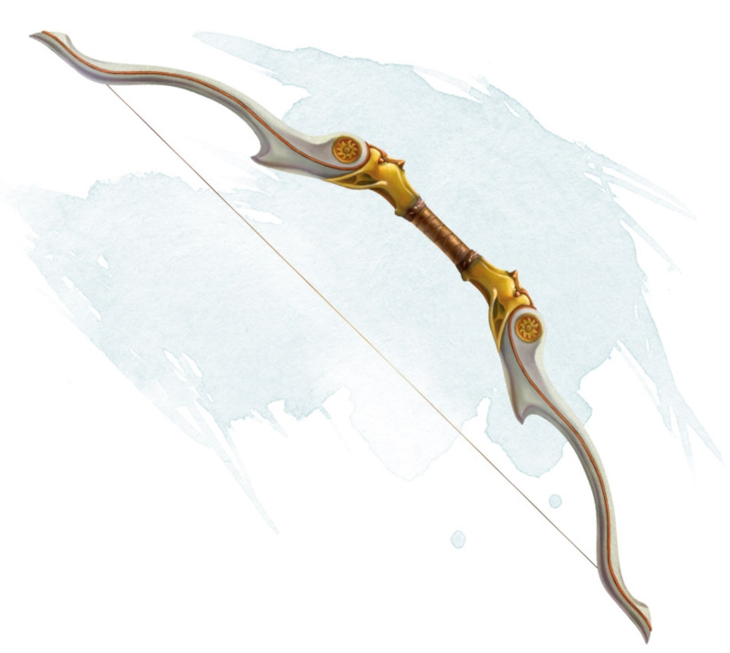

Oathbow
[ Arc du serment ]
Weapon (longbow), very rare (requires attunement)
When you nock an arrow on this bow, it whispers in Elvish, "Swift defeat to my enemies." When you use this weapon to make a ranged attack, you can, as a command phrase, say, "Swift death to you who have wronged me." The target of your attack becomes your sworn enemy until it dies or until dawn seven days later. You can have only one such sworn enemy at a time. When your sworn enemy dies, you can choose a new one after the next dawn.
When you make a ranged attack roll with this weapon against your sworn enemy, you have advantage on the roll. In addition, your target gains no benefit from cover, other than total cover, and you suffer no disadvantage due to long range. If the attack hits, your sworn enemy takes an extra 3d6 piercing damage.
While your sworn enemy lives, you have disadvantage on attack rolls with all other weapons.
When you make a ranged attack roll with this weapon against your sworn enemy, you have advantage on the roll. In addition, your target gains no benefit from cover, other than total cover, and you suffer no disadvantage due to long range. If the attack hits, your sworn enemy takes an extra 3d6 piercing damage.
While your sworn enemy lives, you have disadvantage on attack rolls with all other weapons.
Dungeon Master´s Guide (SRD)
